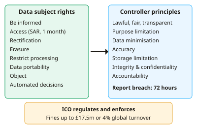

A-level Computer Science Year 12 · Topic 8
Legal, moral, cultural and ethical issues
Legal, moral, cultural and ethical issues explores how computing affects people and society.
We will study the Data Protection Act, the Computer Misuse Act, investigatory powers law, copyright and licensing.
Then we consider work and automation, artificial intelligence, the environment, censorship and monitoring, offensive communications and the digital divide.
- 7 subtopics
- 203 questions
- Free: 8.1 notes and 10 questions
In this topic
- 8.1Data Protection Act 2018 and GDPRFree below · 22 questions
- 8.2Computer Misuse Act 1990 and Regulation of Investigatory Powers Act 2000Open in Full Marks · 22 questions
- 8.3Copyright, Designs and Patents Act, software licensing and piracyOpen in Full Marks · 44 questions
- 8.4Computers in the workforce and automated decision makingOpen in Full Marks · 33 questions
- 8.5Artificial intelligence: benefits, risks and ethicsOpen in Full Marks · 30 questions
- 8.6Environmental effects, censorship, monitoring behaviour and analysing personal informationOpen in Full Marks · 28 questions
- 8.7Offensive communications, cultural implications and the digital divideOpen in Full Marks · 24 questions
8.1 · Free notes
Data Protection Act 2018 and GDPR

Key points
- The Data Protection Act 2018 (DPA 2018) is the UK law that controls how personal data is used. It works alongside the UK GDPR, the UK's retained version of the EU GDPR. It is enforced by the Information Commissioner's Office (ICO).
- Personal data is any information that can identify a living person (name, address, IP address, photo). The data subject is the person the data is about. The data controller decides why and how data is processed. The data processor handles data on the controller's behalf.
- Special category data needs extra protection. It covers health, race or ethnic origin, religious or political beliefs, trade union membership, sex life or orientation, and genetic or biometric data used for identification.
- The seven principles are: lawfulness, fairness and transparency; purpose limitation; data minimisation; accuracy; storage limitation; integrity and confidentiality (security); and accountability. Learn these and match them to scenarios.
- Processing needs a lawful basis: consent, contract, legal obligation, vital interests, public task or legitimate interests. Valid consent must be freely given, specific, informed and unambiguous. Pre-ticked boxes and silence are not consent, and consent can be withdrawn.
- Data subject rights are: to be informed, access, rectification, erasure, restrict processing, data portability, object, and rights relating to automated decision-making and profiling.
- A subject access request (SAR) must normally be answered within one month and is usually free of charge.
- A reportable personal data breach must be notified to the ICO within 72 hours of the organisation becoming aware of it. The people affected must also be told if the risk to them is high.
- The ICO can impose fines of up to £17.5 million or 4% of global annual turnover, whichever is higher, for the most serious breaches. Lesser breaches carry a lower maximum fine.
- Technical measures that support the security principle include encryption, access control, pseudonymisation, backups and audit logs. Data protection by design and by default means building privacy into systems from the start.
- Exam evaluation points: the Act protects individuals' privacy. It also places compliance costs on businesses. Large datasets enable useful services, but they raise the risk of misuse and breaches.
In more detail
- The seven principles: lawfulness, fairness and transparency; purpose limitation; data minimisation; accuracy; storage limitation; integrity and confidentiality; accountability.
- Individuals' rights: to be informed, to access their data, to correct it, to have it erased, to restrict or object to processing, to data portability, and rights over automated decisions.
- Worked breach: a hospital emailing patient records to the wrong person must report it to the ICO within 72 hours if people could be harmed.
- Lawful bases: consent, contract, legal obligation, vital interests, public task and legitimate interests.
- Penalties: fines of up to £17.5 million or 4% of global annual turnover.
Practice
Data Protection Act 2018 and GDPR: 10 questions
Pick an answer to check it, or open the answer for the explanation.
1. A shop keeps details of customers who last bought from it in 2005 and has no reason to retain them. Which data protection principle is breached?
- Accuracy
- Lawfulness
- Storage limitation
- Purpose limitation
Show answer
C: Storage limitation. Storage limitation says personal data must not be kept longer than necessary for its purpose. Keeping old records with no reason breaches this.
2. A firm has global annual turnover of £800 million. The maximum UK GDPR fine is £17.5m or 4% of turnover, whichever is higher. What is the maximum fine?
- £17.5 million
- £32 million
- £800 million
- £8 million
Show answer
B: £32 million. 4% of £800 million is £32 million. This is higher than £17.5 million, so £32 million is the maximum.
3. A company becomes aware of a reportable personal data breach at 09:00 on Monday. By when must it notify the ICO?
- 09:00 the following Monday
- 09:00 Tuesday
- 09:00 Thursday
- 09:00 Wednesday
Show answer
C: 09:00 Thursday. The ICO must be notified within 72 hours of becoming aware of the breach. Monday 09:00 plus 72 hours is Thursday 09:00.
4. A customer makes a subject access request to a company. Which statement is correct?
- It is valid only with a court order
- It must be answered within 90 days and costs £50
- It must normally be answered within one month, usually free
- It covers only data held for under a year
Show answer
C: It must normally be answered within one month, usually free. Under UK GDPR a SAR is normally answered within one month and without charge. No court order is needed.
5. An online shop uses a cloud firm to store its orders, acting only on the shop's instructions. Which statement is correct?
- The shop is the processor and the cloud firm the controller
- Both are data subjects
- The shop is the controller and the cloud firm the processor
- Neither is covered by the Act
Show answer
C: The shop is the controller and the cloud firm the processor. The controller decides why and how personal data is processed. The firm acting on its instructions is the processor.
6. Which of these is special category data under UK GDPR?
- A pupil's religious belief
- A customer's postcode
- An employee's job title
- A customer's email address
Show answer
A: A pupil's religious belief. Religious or philosophical beliefs are special category data. Email, postcode and job title are ordinary personal data.
7. A bookshop website requires users to give their religion and date of birth just to register an account. Which principle is most clearly breached?
- Accountability
- Accuracy
- Data minimisation
- Integrity and confidentiality
Show answer
C: Data minimisation. Data minimisation means collecting only data that is adequate, relevant and necessary. Religion is not needed to sell books.
8. A hospital holds a patient's wrong address and the patient asks for it to be corrected. Which right is being used?
- Right to portability
- Right to erasure
- Right to rectification
- Right to object
Show answer
C: Right to rectification. The right to rectification lets individuals have inaccurate personal data corrected.
9. Which of these is a lawful basis for processing personal data under UK GDPR?
- The data is stored on UK servers
- The company has a large turnover
- Processing is necessary to fulfil a contract with the data subject
- The data was publicly visible online
Show answer
C: Processing is necessary to fulfil a contract with the data subject. Contract is one of the six lawful bases. Public availability, company size and storage location are not lawful bases.
10. Which statement about consent under UK GDPR is correct?
- It can be assumed from silence
- A pre-ticked box is valid consent
- It must be freely given, specific, informed and unambiguous
- Once given it cannot be withdrawn
Show answer
C: It must be freely given, specific, informed and unambiguous. Valid consent needs a clear positive action that is freely given, specific, informed and unambiguous. Silence and pre-ticked boxes are not valid, and consent can be withdrawn.
Keep going in Full Marks
Full Marks has 22 questions on Data Protection Act 2018 and GDPR (12 more than here), set out in practice levels. You also get notes and 3D models for all 7 subtopics of Legal, moral, cultural and ethical issues, plus games, timed exams and past papers.